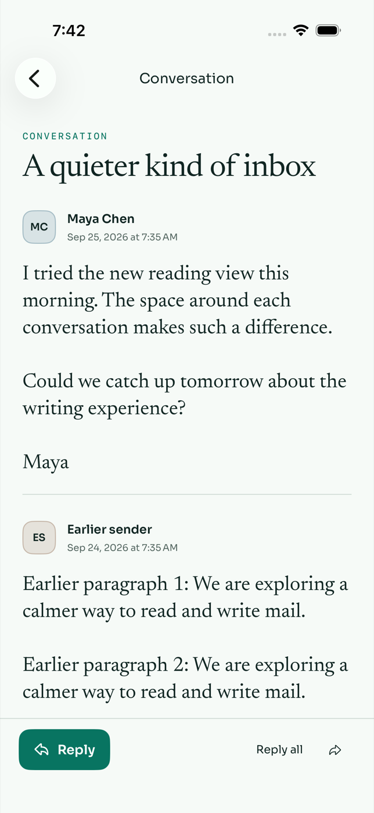
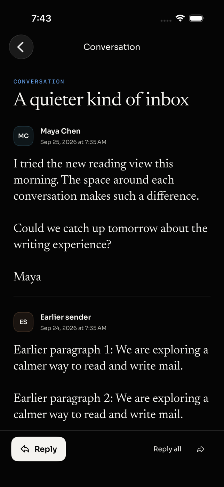

Open a conversation.
Read the latest reply.
iOS now displays messages newest first. Earlier replies follow below, so you can scroll back through the conversation when you need context. Reply, Reply all, and Forward retain their existing latest-message context.

Light · newest reply at the top.
Dark · same reading order.Try it
- Open a conversation containing multiple replies, including a long earlier message.
- Confirm the first message is the most recent reply.
- Scroll down to read earlier replies.
- Tap Reply and confirm the recipient is the latest sender.
- Go back to the inbox and reopen the conversation. The latest reply should appear first again.
Validation
The regression test failed against the original oldest-first build and passed with this change. All 29 iOS unit tests passed. The latest-message flow and existing single-message HTML reading test both passed in light and dark mode (four UI test executions). Screenshots were visually checked on the iPhone 17 simulator.
Repeat using the isolated fixture server: bun apps/api/scripts/mobile-fixture.ts, then ORCA_UI_TEST_SCOPE=reading apps/ios/OrcaUITests/run-fixture-tests.sh <connection.json> <simulator-udid>.
The change reverses only the iOS rendering order. The API and stored conversation remain chronological. Embedded quoted history inside a message is unchanged.